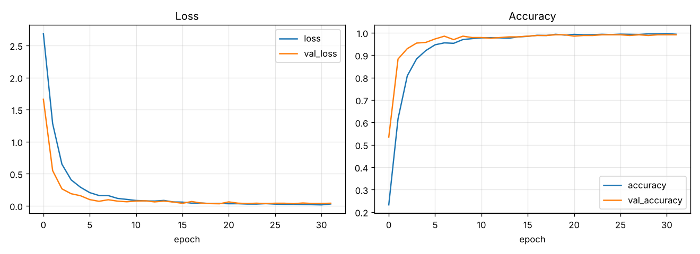
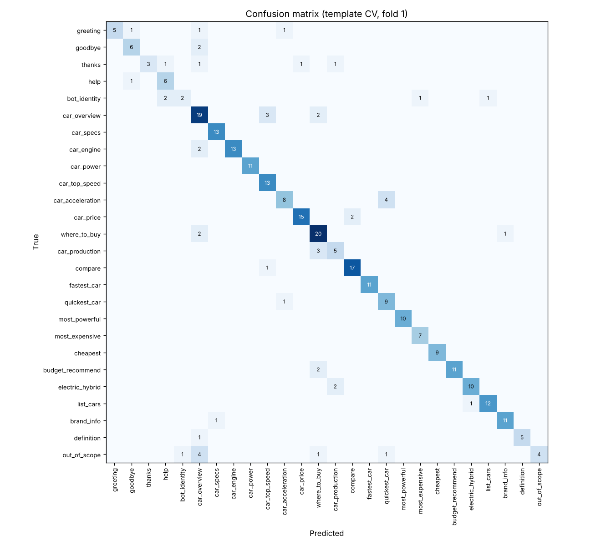
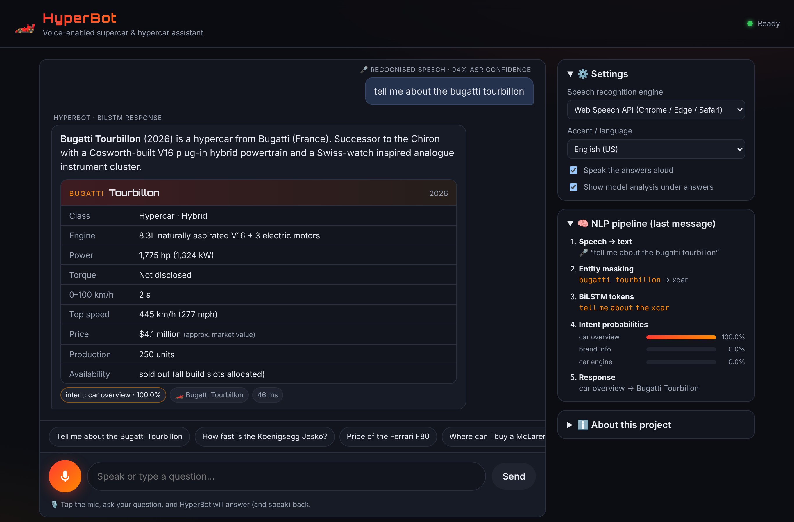
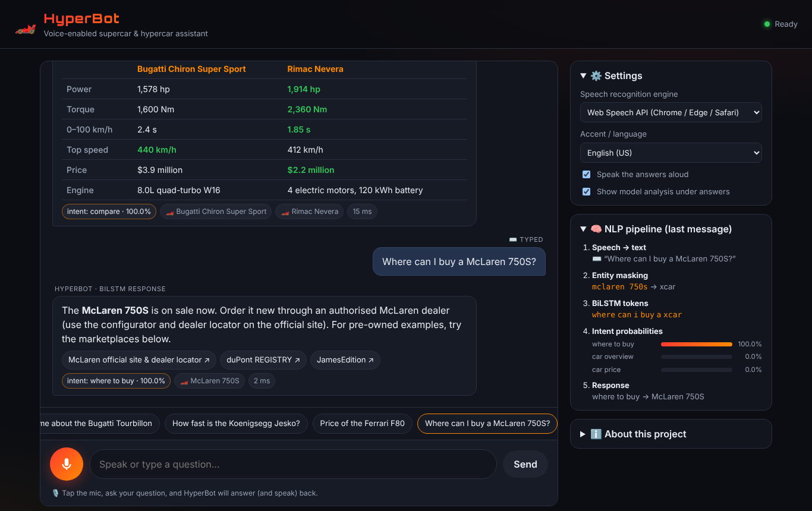
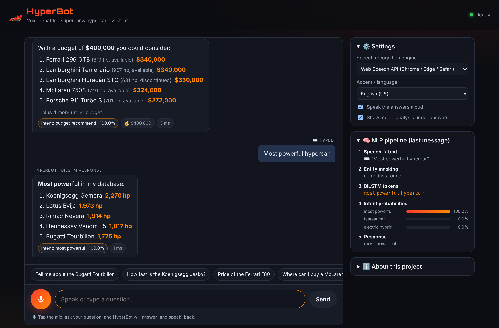
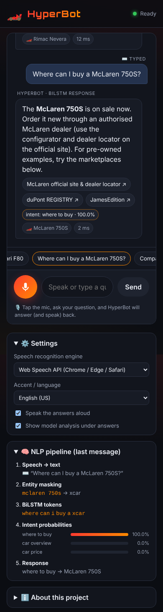

A voice-enabled chatbot for supercar & hypercar information, built with speech recognition and a deep-learning (BiLSTM) intent classifier
| Live application | https://kanavbh29.github.io/slp/ |
| Source code | https://github.com/KanavBh29/slp |
| Submitted by | |
| Roll / ID | |
| Course / Instructor | |
| Date | October 2026 |
HyperBot is a publicly hosted, voice-enabled chatbot that answers questions about 35 supercars and hypercars: their details, specifications, prices and where to buy them. The user's speech is transcribed in the browser by the Web Speech API, or by an on-device Whisper model when the browser's speech service is unavailable. Car names, brands and budgets are extracted with exact, fuzzy and phonetic matching, and replaced by placeholder tokens. A Bidirectional LSTM initialised with pre-trained GloVe embeddings then classifies the sentence into one of 26 intents. A dialogue manager with context memory and slot filling builds the answer from a curated knowledge base, shows it next to the recognised speech, and reads it aloud.
The model was trained on a hand-built corpus of 796 utterance templates, augmented to 4,158 sentences. In 5-fold cross-validation on phrasings never seen during training, it reaches 81.5% ± 3.3 accuracy. That is 4.5 points above the same network trained without transfer learning, and on par with a bag-of-words MLP baseline that is twice its size. On the in-distribution random split it reaches 95.4%. The whole system runs client-side and is deployed to GitHub Pages by a CI pipeline that runs end-to-end tests before every release.
Car enthusiasts often want quick, specific answers ("How fast is the Koenigsegg Jesko?", "Where can I buy a McLaren 750S?") without searching through brochures and listings. A voice interface makes this natural, but it brings two NLP problems. First, speech recognisers often mishear exotic model names. Second, users phrase the same question in many different ways. The project objectives were to:
The application is a static web app: HTML, CSS and JavaScript ES modules, a JSON knowledge base, and the exported model weights. The neural network is trained offline in Python with TensorFlow/Keras, and its weights are exported to a compact binary file. A hand-written JavaScript implementation of the forward pass runs inference in the browser. This design needs no server, has no API keys and no cold starts, and can be hosted free on GitHub Pages.
| Engine | Technique | Runs | Notes |
|---|---|---|---|
| Web Speech API (default) | Browser vendor's neural ASR (Google's speech service in Chrome) | Browser + vendor cloud | Streaming interim results; n-best list (3 alternatives) with confidence; en-US/GB/IN/AU |
| Whisper-tiny.en (fallback) | Transformer encoder-decoder (39M params) via Transformers.js / ONNX Runtime Web | Fully on device | Used automatically if the cloud service is unreachable (e.g. Brave); push-to-talk; audio resampled to 16 kHz mono |
General-purpose ASR is weakest on exactly the words this domain depends on: "Chiron" is heard as "sheeran", "Huayra" as "wire a", "Nevera" as "never a". Three mechanisms compensate:
sheeran and chiron to the same key xrn, and hurricane and huracan to hrkn.The recognised text and its ASR confidence are shown above each answer, so the user can always see what the system heard.
No public dataset exists for a supercar assistant, so a domain corpus was written by hand: 796 templates over 26 intents. It includes short follow-ups ("how much does it cost"), unpunctuated speech-style text and an out_of_scope class. Templates contain slot placeholders {car}, {brand} and {num}, which are delexicalised to the tokens xcar, xbrand and xnum. As a result, the network learns the intent rather than memorising car names, and new cars can be added without retraining.
Augmentation (12 variants per template):
The final training set has 4,158 sentences.
| Intent | Meaning | Templates | Example | F1* |
|---|---|---|---|---|
greeting | Opening the conversation | 38 | “hey” | 0.77 |
goodbye | Ending the conversation | 36 | “see you” | 0.75 |
thanks | Gratitude / acknowledgement | 33 | “thanks a lot” | 0.60 |
help | What can the bot do | 31 | “how can you help me” | 0.75 |
bot_identity | Questions about the bot | 26 | “what is your name” | 0.44 |
car_overview | General details about a car | 46 | “info on the Chiron” | 0.68 |
car_specs | Full specification sheet | 29 | “Chiron specifications” | 0.96 |
car_engine | Engine / powertrain | 33 | “what is the engine in the Chiron” | 0.93 |
car_power | Horsepower and torque | 30 | “what is the horsepower of the Chiron” | 1.00 |
car_top_speed | Maximum speed | 29 | “Chiron top speed” | 0.87 |
car_acceleration | 0-100 km/h / 0-60 mph | 29 | “Chiron 0 to 60” | 0.73 |
car_price | Price / cost / value | 37 | “Chiron price” | 0.91 |
where_to_buy | Dealers, marketplaces, auctions | 41 | “how can i buy a Chiron” | 0.78 |
car_production | Units built, availability | 25 | “is the Chiron limited edition” | 0.62 |
compare | Head-to-head comparison | 32 | “Chiron versus Jesko” | 0.92 |
fastest_car | Ranking by top speed | 25 | “fastest hypercar” | 1.00 |
quickest_car | Ranking by acceleration | 22 | “fastest 0 to 60 car” | 0.75 |
most_powerful | Ranking by power | 21 | “most powerful hypercar” | 1.00 |
most_expensive | Ranking by price (desc) | 19 | “which car costs the most” | 0.93 |
cheapest | Ranking by price (asc) | 21 | “most affordable supercar” | 1.00 |
budget_recommend | Recommendations for a budget | 34 | “best car under $400k” | 0.92 |
electric_hybrid | EV / hybrid listing | 27 | “show me electric supercars” | 0.87 |
list_cars | Database contents | 27 | “which cars can you tell me about” | 0.92 |
brand_info | Manufacturer information | 27 | “Ferrari models” | 0.92 |
definition | Supercar vs hypercar | 24 | “difference between a supercar and a hypercar” | 0.91 |
out_of_scope | Off-topic (politely declined) | 54 | “what time is it” | 0.53 |
* F1 on fold 1 of the template cross-validation, i.e. on phrasings unseen during training.
web/data/cars.json holds 35 cars (21 hypercars, 14 supercars; 2 electric, 17 hybrid) from 18 manufacturers. Each entry records the engine, power, torque, 0–100 km/h time, top speed, approximate price, production volume, availability status, a description, and aliases (including common mishearings). The where to buy answer depends on the car's status:
| Car | Class | Powertrain | hp | km/h | 0-100 s | Price | Status |
|---|---|---|---|---|---|---|---|
| Aston Martin Valhalla | Hypercar | Hybrid | 1,064 | 350 | 2.5 | $1.0M | limited |
| Aston Martin Valkyrie | Hypercar | Hybrid | 1,139 | 350 | 2.6 | $3.2M | sold out |
| Bugatti Tourbillon | Hypercar | Hybrid | 1,775 | 445 | 2.0 | $4.1M | sold out |
| Bugatti Chiron Super Sport | Hypercar | Petrol | 1,578 | 440 | 2.4 | $3.9M | sold out |
| Bugatti Veyron 16.4 | Hypercar | Petrol | 987 | 407 | 2.5 | $1.8M | discontinued |
| Chevrolet Corvette ZR1 | Supercar | Petrol | 1,064 | 375 | 2.4 | $175k | available |
| Czinger 21C | Hypercar | Hybrid | 1,250 | 407 | 1.9 | $2.0M | limited |
| Ferrari F80 | Hypercar | Hybrid | 1,184 | 350 | 2.15 | $3.9M | sold out |
| Ferrari 12Cilindri | Supercar | Petrol | 819 | 340 | 2.9 | $423k | available |
| Ferrari 296 GTB | Supercar | Hybrid | 819 | 330 | 2.9 | $340k | available |
| Ferrari SF90 Stradale | Supercar | Hybrid | 986 | 340 | 2.5 | $524k | available |
| Ferrari LaFerrari | Hypercar | Hybrid | 950 | 350 | 2.4 | $4.0M | discontinued |
| Ford GT | Supercar | Petrol | 660 | 348 | 3.0 | $1.0M | discontinued |
| Gordon Murray T.50 | Hypercar | Petrol | 654 | 362 | 2.8 | $3.1M | sold out |
| Hennessey Venom F5 | Hypercar | Petrol | 1,817 | 500 | 2.6 | $2.1M | sold out |
| Koenigsegg Gemera | Hypercar | Hybrid | 2,270 | 400 | 1.9 | $1.7M | sold out |
| Koenigsegg Jesko Absolut | Hypercar | Petrol | 1,600 | 500 | 2.5 | $3.0M | sold out |
| Lamborghini Temerario | Supercar | Hybrid | 907 | 343 | 2.7 | $340k | available |
| Lamborghini Revuelto | Supercar | Hybrid | 1,001 | 350 | 2.5 | $608k | available |
| Lamborghini Huracán STO | Supercar | Petrol | 631 | 310 | 3.0 | $330k | discontinued |
| Lamborghini Aventador SVJ | Supercar | Petrol | 759 | 350 | 2.8 | $550k | discontinued |
| Lotus Evija | Hypercar | Electric | 1,973 | 350 | 2.9 | $2.1M | limited |
| Maserati MC20 | Supercar | Petrol | 621 | 325 | 2.9 | $250k | available |
| McLaren W1 | Hypercar | Hybrid | 1,258 | 350 | 2.7 | $2.1M | sold out |
| McLaren 750S | Supercar | Petrol | 740 | 332 | 2.8 | $324k | available |
| McLaren Artura | Supercar | Hybrid | 690 | 330 | 3.0 | $250k | available |
| McLaren P1 | Hypercar | Hybrid | 903 | 350 | 2.8 | $1.6M | discontinued |
| Mercedes-AMG ONE | Hypercar | Hybrid | 1,049 | 352 | 2.9 | $2.7M | sold out |
| Pagani Utopia | Hypercar | Petrol | 852 | 350 | 3.0 | $2.5M | sold out |
| Pagani Huayra | Hypercar | Petrol | 720 | 383 | 3.2 | $2.8M | discontinued |
| Porsche 911 Turbo S | Supercar | Hybrid | 701 | 322 | 2.5 | $272k | available |
| Porsche 911 GT3 RS | Supercar | Petrol | 518 | 296 | 3.2 | $241k | available |
| Porsche 918 Spyder | Hypercar | Hybrid | 887 | 345 | 2.6 | $1.7M | discontinued |
| Rimac Nevera | Hypercar | Electric | 1,914 | 412 | 1.85 | $2.2M | limited |
| SSC Tuatara | Hypercar | Petrol | 1,750 | 455 | 2.5 | $1.9M | limited |
Specs are manufacturer claims. Prices are approximate US base prices for new cars, or typical market values for sold-out and discontinued cars.
xcar or xbrand.xnum, while names like "V12" are kept. A separate parser converts budgets to USD, including spoken forms ("two million", "half a million", "five hundred thousand") and rupees ("3 crore").The Python (training) and JavaScript (inference) preprocessors are tested against each other on tricky inputs to guarantee identical tokens.
| Layer | Output | Parameters | Notes |
|---|---|---|---|
| Input | 24 token ids | 0 | 0 = padding (masked) |
| Embedding | 24 × 50 | 405,800 | GloVe-50d init (Wikipedia + Gigaword, 400k words), fine-tuned, mask_zero |
| Bidirectional LSTM | 128 | 58,880 | 64 units per direction |
| Dropout | 128 | 0 | rate 0.3 |
| Dense | 64 | 8,256 | ReLU |
| Dropout | 64 | 0 | rate 0.3 |
| Dense (output) | 26 | 1,690 | softmax |
| Total | 474,626 | ||
Why a BiLSTM? Intent depends on word order and context, e.g. "is the xcar faster than the xcar" (compare) versus "fastest car" (ranking). A bidirectional LSTM reads the sentence in both directions and handles variable length through masking.
Why GloVe transfer learning? The vocabulary (8,116 words) contains every training word plus the 8,000 most frequent English words, all initialised with GloVe vectors. Words that never appear in training receive no gradient and keep their pre-trained meaning. This lets the model handle unseen wording, e.g. "where can I acquire one" → where_to_buy and "which vehicles are battery electric" → electric_hybrid. The placeholder tokens start from the vectors of "supercar", "manufacturer" and "million".
Training: Adam (learning rate 2·10
Browser export: embeddings are quantised to int8 with a per-row scale, and the other weights stay float32, giving a ≈0.7 MB binary plus an 80 KB vocabulary. The JavaScript LSTM (Keras gate order i, f, c, o) reproduces the Keras probabilities to within 5·10
| Component | Technology |
|---|---|
| Model training & evaluation | Python 3, TensorFlow 2 / Keras, NumPy, Matplotlib, GloVe embeddings |
| Frontend | HTML5, CSS, vanilla JavaScript ES modules (no framework), responsive for mobile |
| Speech | Web Speech API (SpeechRecognition + SpeechSynthesis); Transformers.js Whisper fallback |
| Inference | Custom JavaScript BiLSTM forward pass over exported weights |
| Testing | Node.js test scripts (model parity, tokenizer parity, entities, budgets, 32-turn dialogue); Playwright browser tests |
| Hosting / CI-CD | GitHub Actions → GitHub Pages (tests must pass before deploy) |
web/ deployed static site js/speech.js speech recognition engines + text-to-speech js/nlp.js normalisation, entity extraction, budget parser js/model.js BiLSTM forward pass in JavaScript js/chatbot.js dialogue manager + response generation data/cars.json knowledge base model/model.json|bin vocabulary + weights training/ intents.py, nlp.py, train.py, artifacts/ tests/ parity, entity and conversation tests .github/workflows/ test & deploy pipeline
Three neural models were compared under two protocols:
| Model | Trainable params | Random: acc | Random: F1 | Template CV: acc | Template CV: F1 |
|---|---|---|---|---|---|
| Bag-of-words MLP (baseline) | 1.04 M | 97.1% | 0.930 | 80.6% ± 1.1 | 0.789 ± 0.028 |
| BiLSTM, embeddings from scratch | 0.47 M | 94.9% | 0.910 | 77.0% ± 1.3 | 0.740 ± 0.009 |
| BiLSTM + GloVe (deployed) | 0.47 M | 95.4% | 0.918 | 81.5% ± 3.3 | 0.792 ± 0.044 |
| Accuracy per fold | Fold 1 | Fold 2 | Fold 3 | Fold 4 | Fold 5 | Mean |
|---|---|---|---|---|---|---|
| BoW-MLP | 79.6% | 82.1% | 80.5% | 79.4% | 81.4% | 80.6% |
| BiLSTM (scratch) | 75.3% | 77.5% | 77.3% | 79.0% | 75.8% | 77.0% |
| BiLSTM + GloVe | 83.9% | 84.6% | 83.8% | 79.0% | 76.1% | 81.5% |


Error analysis. Most remaining errors fall into four groups:
The dialogue manager limits the impact of these errors. For example, a car-specific intent with no car mentioned produces a clarifying question rather than a wrong fact.
| Test (run in CI before every deployment) | Result |
|---|---|
| JavaScript BiLSTM vs Keras on 11 reference sentences | identical labels; max |Δp| = 5·10 |
| Python vs JavaScript tokenizer on 13 tricky inputs | identical |
| Entity extraction incl. ASR errors ("bugatti sheeran", "koenig seg jesko", "rimac never a") | 11 / 11 correct |
| Budget parser ("$300k", "2.5 million dollars", "two million", "half a million", "3 crore rupees") | 8 / 8 correct |
| 32-turn scripted conversation (follow-ups, comparisons, slot filling, out-of-scope) | 32 / 32 intents and entities correct |
| Headless Chromium, desktop + mobile, simulated microphone | speech shown with confidence, correct answer, no console errors, no horizontal overflow |
| Simulated speech-service network failure | automatic switch to on-device Whisper with explanation |
| User (recognised speech) | Intent | HyperBot response (spoken version) |
|---|---|---|
| “Hello” | greeting99.9% | Hello! Which supercar or hypercar are you curious about today? |
| “Tell me about the Bugatti Chiron” | car_overview100.0% | The Bugatti Chiron Super Sport is a 2021 hypercar from Bugatti. The long-tail, top-speed focused Chiron. Its sibling was the first production car past 300 mph (490 km/h). |
| “How fast is it?” | car_top_speed100.0% | The Bugatti Chiron Super Sport has a top speed of 440 km/h (273 mph). |
| “How much does it cost?” | car_price100.0% | The Bugatti Chiron Super Sport costs about 3.9 million dollars. |
| “Where can I buy one?” | where_to_buy100.0% | The Bugatti Chiron Super Sport is sold out, so you'd have to buy one second-hand, through a specialist like duPont Registry, JamesEdition, or an auction house like RM Sotheby's. Bugatti dealers also broker resales. |
| “Compare it with the Koenigsegg Jesko” | compare100.0% | The Bugatti Chiron Super Sport wins on torque and 0–100 km/h, while the Koenigsegg Jesko Absolut wins on power, top speed and price. |
| “Recommend me a car” | budget_recommend100.0% | Sure! What is your budget? For example “300 thousand dollars” or “2 million”. |
| “500 thousand” | budget_recommend84.2% | With 500,000 dollars, my top pick is the Ferrari 12Cilindri at about 423,000 dollars. |
| “Is the Lamborghini Revuelto a hybrid?” | car_engine100.0% | The Lamborghini Revuelto is powered by a 6.5L naturally aspirated V12 plug-in hybrid (hybrid powertrain), producing 1,001 hp. |
| “bugatti sheeran price” | car_price100.0% | The Bugatti Chiron Super Sport costs about 3.9 million dollars. |
| “What is the price of the Tesla Roadster?” | unknown_car100.0% | Sorry, I don’t have that car in my database yet. Ask me what cars I know to hear the full list. |
| “Tell me a joke” | out_of_scope100.0% | I only know about supercars and hypercars. Try asking “What is the fastest car?” |
| “Thanks, bye” | goodbye100.0% | Goodbye! Keep it pinned. 🏁 |




HyperBot meets all project requirements. It accepts voice input, transcribes it with a speech recognition engine (with an on-device fallback), classifies intent with a deep-learning BiLSTM using transfer-learned GloVe embeddings, and answers questions about details, specifications, prices and where to buy 35 supercars and hypercars. Each turn shows both the recognised speech and the response. The system is publicly deployed through an automated test-and-deploy pipeline. Evaluation on unseen phrasings shows a clear benefit from transfer learning (81.5% vs 77.0%). Domain-specific handling of speech recognition errors (n-best rescoring, fuzzy and phonetic matching) makes the voice experience reliable even for hard-to-pronounce car names.
git clone https://github.com/KanavBh29/slp && cd slp
pip install -r training/requirements.txt
python3 training/train.py # trains, evaluates (random split + 5-fold template CV),
# writes web/model/* and training/artifacts/*
npm test # parity, entity, budget and conversation tests
python3 -m http.server 8000 --directory web # open http://localhost:8000